Standing dormant on the edge of a lake in Poland is a half-finished nuclear power plant. Its rough outline of concrete and rusting steel quietly divides the water it sits in. The dark surface is only broken by the wind and the seagull colony nesting nearby.
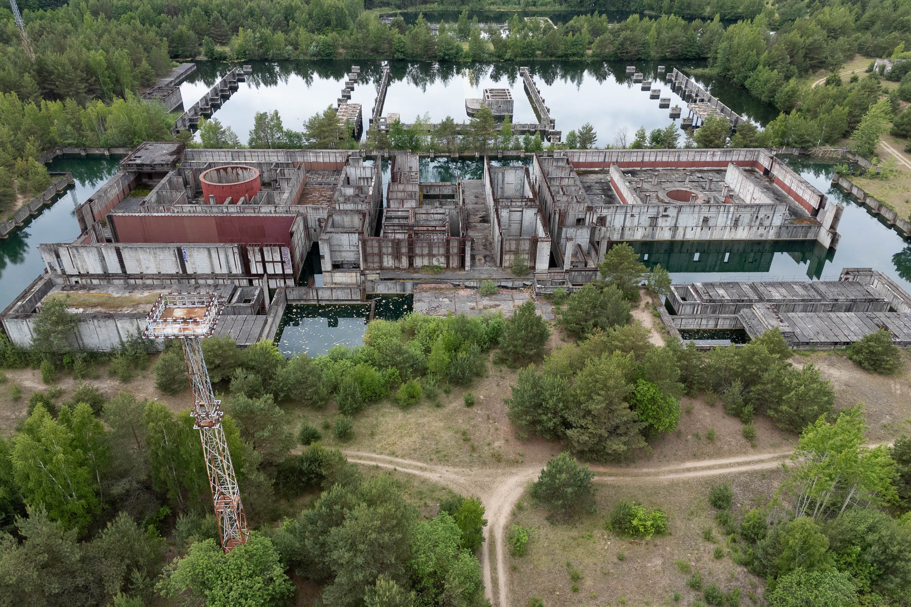
As nuclear technology matured from its launch in the 1950s, many countries around the world looked to splitting the atom to power the future. Poland's government approved plans to build its first nuclear power plant in 1971, and after ten years of development, this location was selected and construction started in 1982.
Construction continued slowly until April 26, 1986, when the Chernobyl disaster occurred and set in motion doubt in Poland about the risks and benefits of this new technology. Following the fallout of one of the world's most dangerous nuclear disasters, later that year the Polish government paused construction to collect opinions on the future of the site. A local referendum provided such opinions, with 86.1% of votes against continued construction, freezing the plant's development.
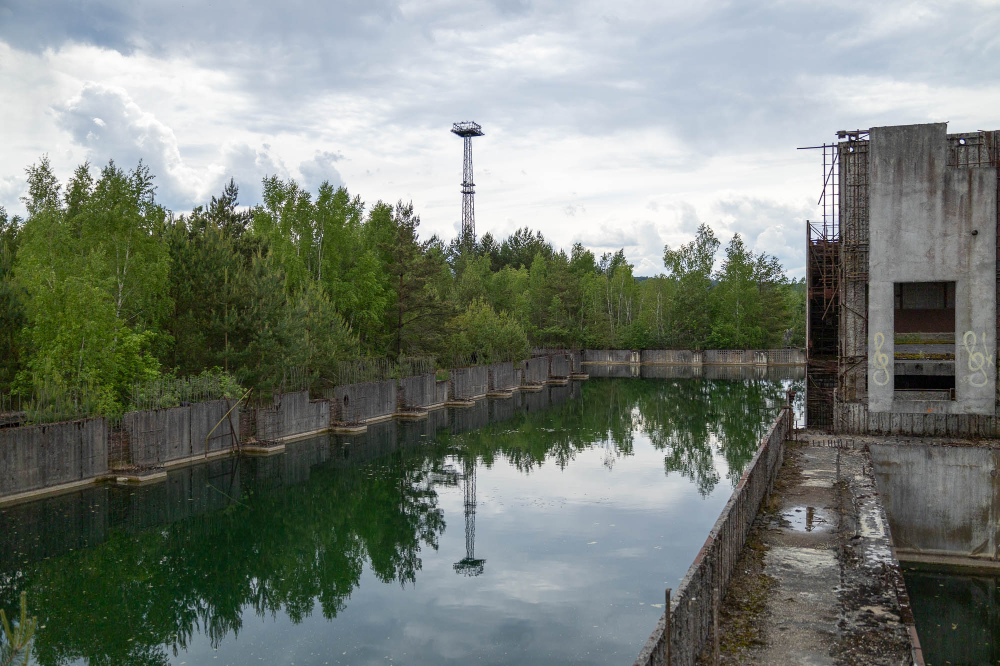
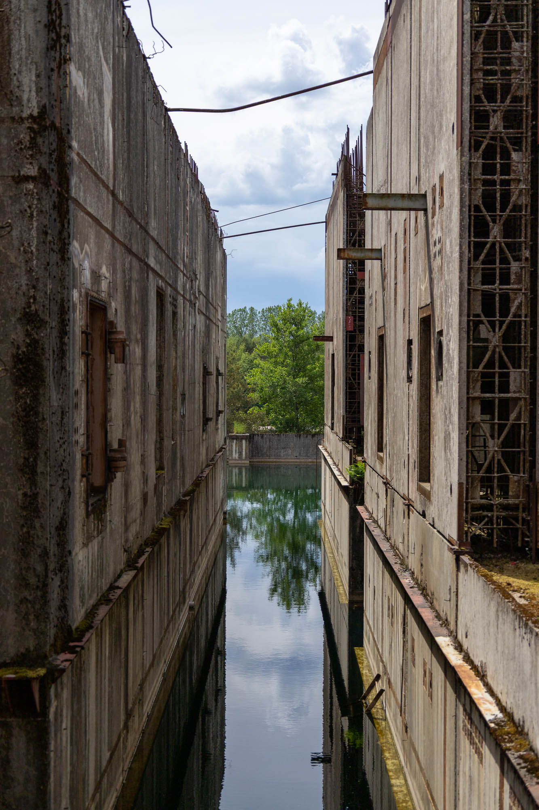
Access to the site was easy, through the forest and through one of many holes in the fence. It's clear some sort of security visits occasionally from the well-worn vehicle tracks circling the structure, but they were nowhere to be seen during my visit.
Part of the structure was safely accessible, other parts less so. The unfinished nature of the building and current water level result in wide channels only traversable via welded rods that connect the top of one wall to another.
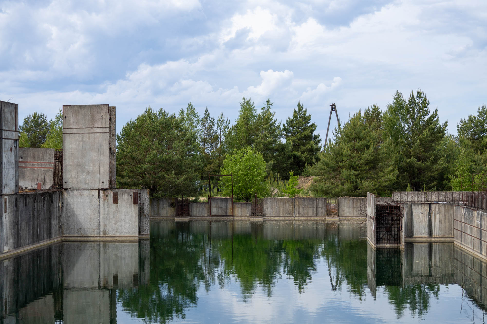
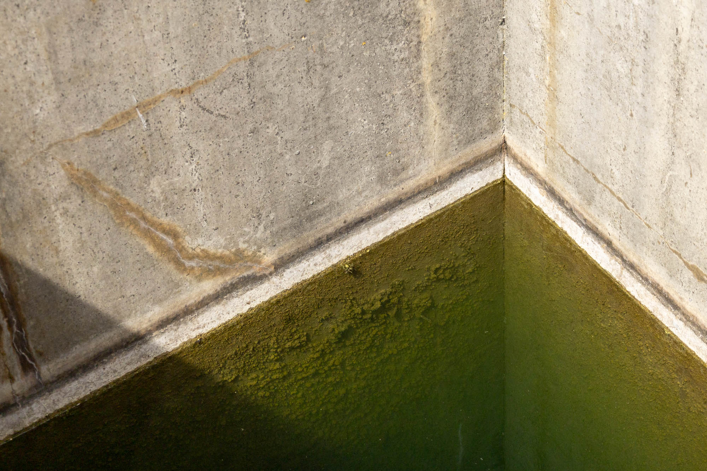
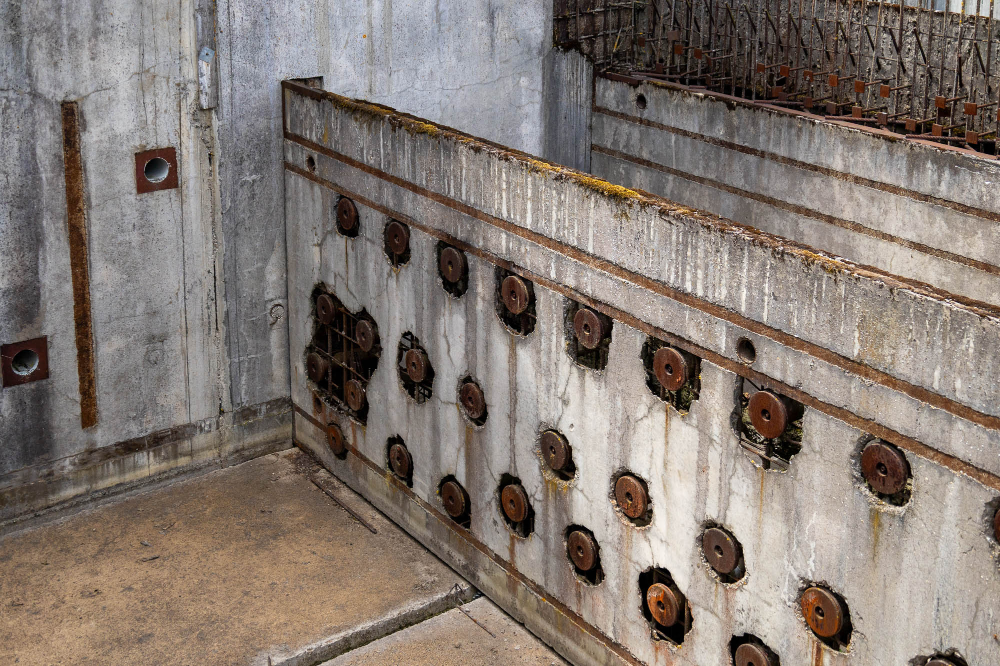
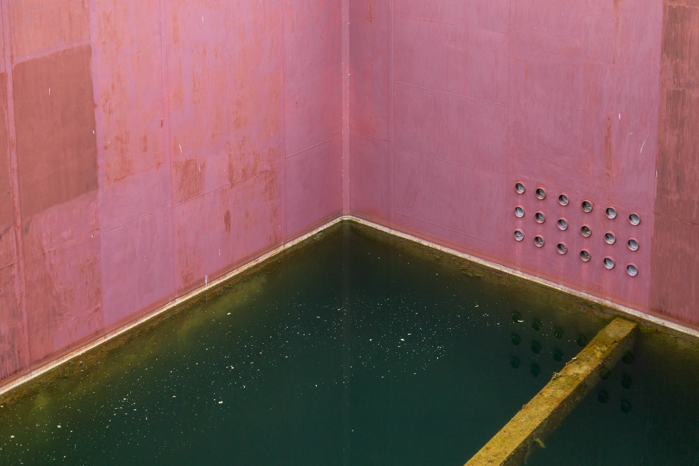
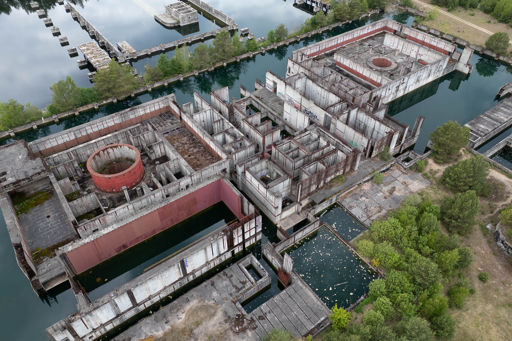
Only two of the planned four reactor buildings were meaningfully started. The remaining two would have been built in the watery void beyond the current construction. Development never progressed far enough for any nuclear material to be brought to the site, so there is no need to worry about that while exploring.
When the cancellation of the project happened, the Polish government found itself with lots of expensive equipment and material that became worthless overnight. Most was scrapped, but two of the reactors were sold for symbolic sums and live on today. One at the Loviisa Nuclear Power Plant in Finland, and the other at the Paks Nuclear Power Plant in Hungary.
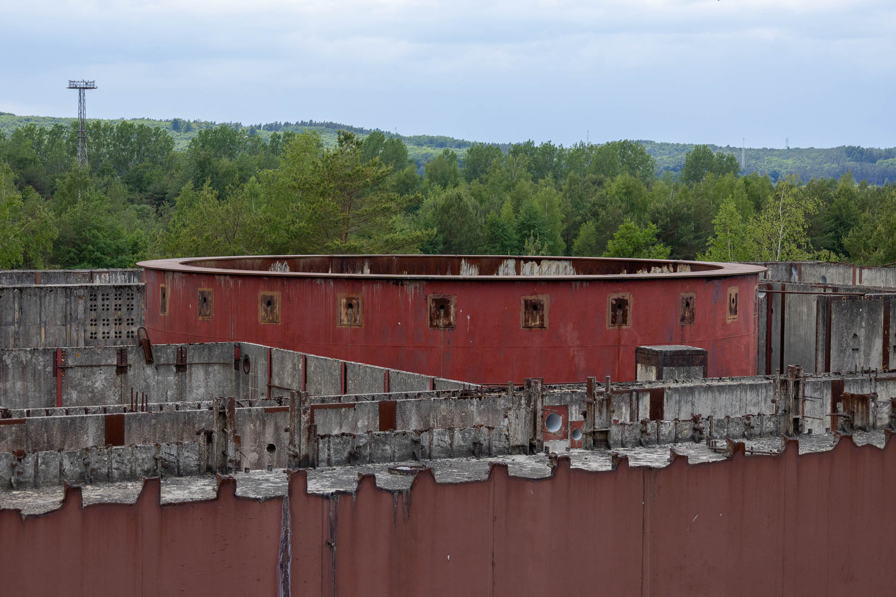
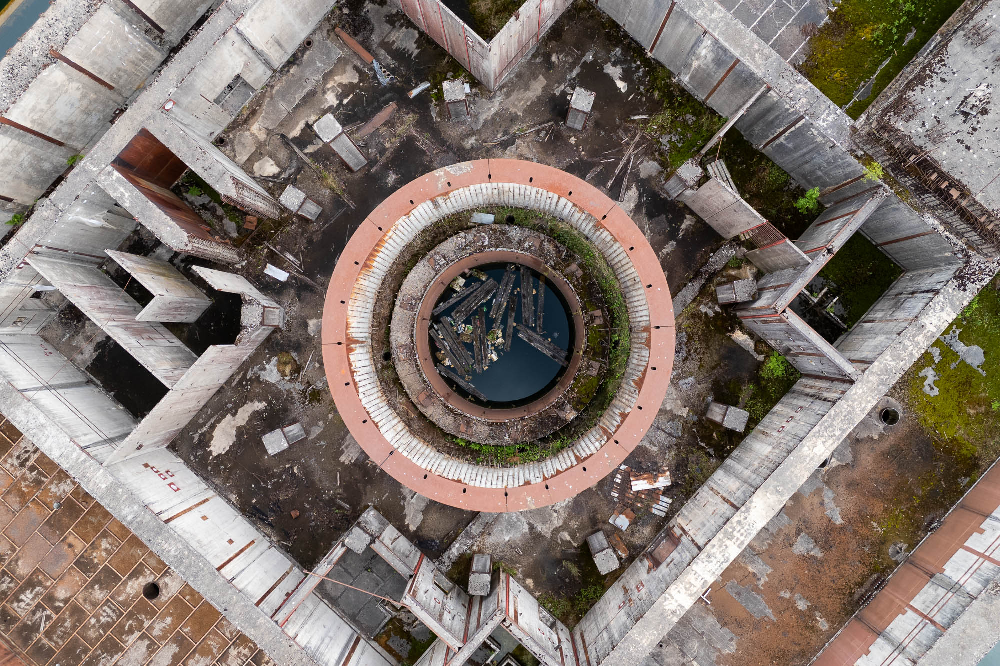
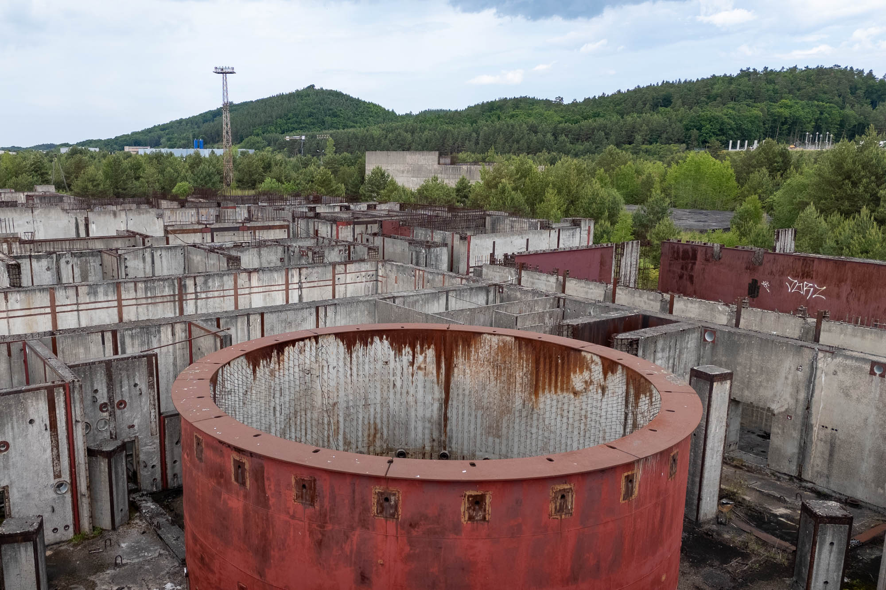
Today, the future of nuclear power in Poland is uncertain. Recent energy policies still state the need to diversify primary energy sources and reduce greenhouse gas emissions, which makes nuclear an interesting option to pursue again. In fact, for a period of time in the 2010s, this location was being considered for a second attempt.
We'll have to wait and see if Poland can complete its next planned nuclear reactor, or if another unfinished silent monster of concrete and steel will be added to the Polish landscape.
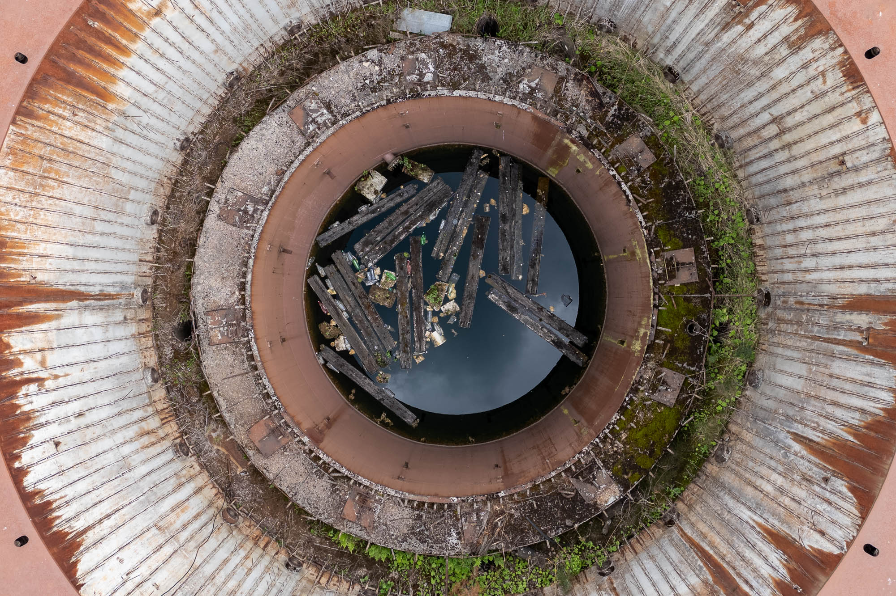